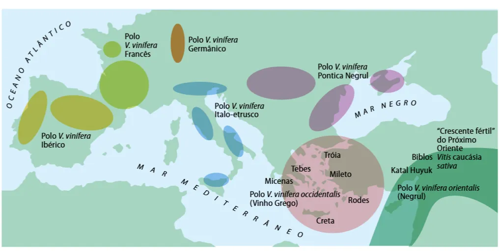
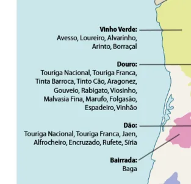
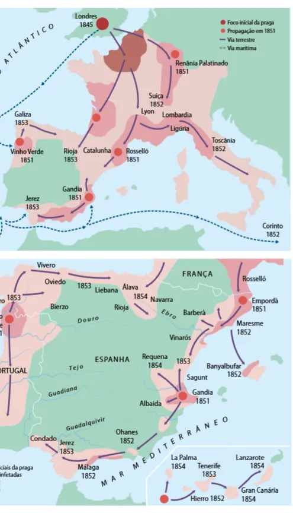
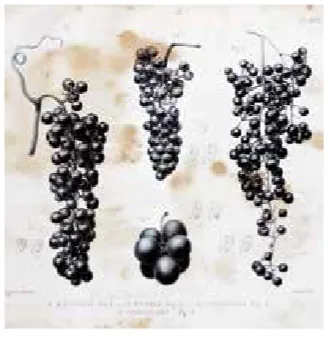

Capítulo 01 · Evolução histórica das castas
Evolução histórica das castas
O melhoramento da videira teve a sua origem quando as alterações climáticas permitiram ao Homem do Neolítico estabelecer-se de forma sedentária e iniciar o processo de domesticação da videira, evoluindo assim o valor cultural e de consumo da fruta de genótipos da espécie selecionados.
Polos históricos das castas
As primeiras castas de videira tiveram origem de forma natural por seleção e propagação humana há muitos milhares de anos. A videira silvestre (Vitis vinifera subsp. sylvestris) é originalmente dioica, apresentando plantas masculinas e femininas separadas. Através de cruzamentos espontâneos surgiram numerosos descendentes geneticamente distintos. Entre aproximadamente 8.000 e 10.000 a. C., na região do Sul do Cáucaso (Geórgia, Arménia e Anatólia Oriental), iniciou-se o processo de domesticação da videira. O fator determinante deste processo foi o aparecimento espontâneo de flores hermafroditas, permitindo a autofecundação e facilitando a seleção de plantas que apresentavam bagos de maior dimensão, maior teor de açúcar, menor número de sementes e produtividade superior. A partir desse momento, o Homem começou a multiplicar vegetativamente, por estacaria, os indivíduos mais promissores, dando origem à videira cultivada (Vitis vinifera subsp. vinifera). Este processo ocorreu ao longo de milénios e, muito provavelmente, em momentos distintos, nas diferentes regiões onde a viticultura se estabeleceu posteriormente. Como consequência, formaram-se inicialmente diferentes centros genéticos, dando origem a castas adaptadas às respetivas condições edafoclimáticas, mas com características genéticas e agronómicas distintas de região para região. Os cientistas russos Negrul e, posteriormente, Turcivic desenvolveram a teoria da existência de diferentes centros genéticos da videira. Segundo esta teoria, a evolução iniciou-se no Oriente com o denominado polo Vitis vinifera orientalis. Posteriormente, com a migração da videira ao longo da região a norte do Mar Negro, desenvolveu-se o polo Vitis vinifera pôntica e, numa fase mais tardia, o polo Vitis vinifera ocidentalis. Contudo, esta classificação não contemplou de forma adequada o importante património genético da Península Ibérica. (Fonte da imagem: Atlas das Castas da Península Ibérica, Dinalivro, 2011, pág. 68, autor-coordenador Jorge Böhm)

Formação das castas clássicas europeias
Ao longo dos milénios seguintes, milhares de novos genótipos surgiram através de cruzamentos naturais entre as diferentes populações de videira cultivada. Atualmente, as análises de ADN demonstram que muitas das castas europeias mais conhecidas apresentam relações diretas de parentesco, sendo progenitoras ou descendentes umas das outras. Segundo O Grande Livro das Castas (Chaves Ferreira, 2007; autor- coordenador Jorge Böhm, p. 35), Plínio, o Velho (23–79 d.C.) descreveu a casta Apiana, geralmente conside-
rada correspondente à atual “Muscat à Petit Grains”. Também
castas como “Pinot” (França) e “Heunisch” (Alemanha) são

consideradas entre as mais antigas variedades cultivadas
ainda existentes na Europa, possuindo uma história de, pelo
Durante os séculos e milénios seguintes, a expansão, Touriga Nacional, Touriga Franca,migração e colonização de diferentes povos do Leste do Gouveio, Rabigato, Viosinho,Mar Mediterrâneo con-tribuíram para a contínua recombi-
nação genética das videiras. As castas vindas dos antigosEspadeiro, Vinhão
polos genéticos vitícolas (Fig. 42, p. 42, na mesma obra)
cruzaram-se progressivamente através dos movimentos de
povos, como os Tartéssios, os Gregos, os Romanos, os Visi-
godos, os Árabes e outros, que introduziram e cultivaram asBaga
suas próprias castas nas novas regiões vitícolas.
José Zapater (ICVV, Logronho, Espanha) demonstra
igualmente, através da análise molecular do ADN dos clo-
roplastos, publicada no Atlas das Castas (coordenador Jorge
Böhm, p. 95), a existência de uma domesticação secundária
em numerosas castas portuguesas de referência, resultante
do cruzamento com materiais vegetais provenientes de
outras regiões vitícolas, originando novos clorótipos.
Deste processo evolutivo resulta a explicação para
Ribatejo:
o aparecimento de castas distintas na Península Ibérica,
Castelão, Fernão Pires
nomeadamente em Espanha e em Portugal. A maioria
Alentejo:
destas castas desenvolveu uma elevada adaptação regio-Alicante-Bouschet,
Trincadeira, Arinto
nal às respetivas condições edafoclimáticas, refletindo a
seleção natural e humana ao longo de séculos. Apenas um
Fig. 2 – Mapa de Portugal mostrando as DO (Denominações
de Origem), com indicação das maiores concentrações de
castas de videira de qualidade superior nas diferentes regiões,
o que reforça o conceito de terroir. (Fonte: Adaptação da Fig.
123, que apresenta um mapa das DO da Península Ibérica,
incluída na secção de Vicente Gómez-Miguel intitulada
“Terroir Zoning as a Criterion for Viticultural Suitability”,
no “Vine Atlas of Spain and Portugal”: https://www.
vinetowinecircle.com/en/terroir-2/terroir-and-viticulture/).
número reduzido apresenta uma ampla adaptação inter-re-
gional, enquanto algumas ocorrem em ambos os países sob
denominações diferentes (sinónimos), como é o caso de
Tempranillo = Aragonez / Tinta Roriz ou Albariño = Alvarinho .
Cruzamentos controlados e importância económica
Embora a variabilidade natural tenha originado milhares
de castas por contínuo cruzamento natural, apenas um
número reduzido de cruzamentos dirigidos realizados pelo
Homem alcançou verdadeira relevância económica. Mesmo
estas castas ocupam superfícies significativamente inferiores às das principais castas tradicionais de referência, sendo que, em muitos casos, as áreas plantadas não se encontram rigorosamente documentadas.
Na Alemanha, a casta Müller-Thurgau, obtida em 1882, continua a ser o cruzamento artificial de maior importância económica, ocupando cerca de 22.000 hectares em todo o mundo. Seguem-se Dornfelder (1955), com aproximadamente 7.000 hectares, Regent* (1967), com cerca de 2.000 hectares, e ainda as castas resistentes Solaris* (1975) e Souvignier Gris* (1983), ambas estimadas em cerca de 1.500 hectares.
Em França destacam-se a Alicante Bouschet (1855), atualmente com menos de 10.000 hectares a nível mundial, Marselan (1961), cuja área é estimada em, aproximadamente, 30.000 hectares, sobretudo na China, Caladoc (1958), com cerca de 2.000 hectares e, mais recentemente, a Floréal* (2003), cuja superfície cultivada ainda se limita a algumas centenas de hectares, mas com quotas de crescimento prometedoras.
Na Áustria, a casta Zweigelt, obtida em 1922, representa um dos maiores sucessos da viticultura moderna, ocupando atualmente cerca de 6.000 hectares.
* castas novas resistentes
A evolução do melhoramento interespecífico
O melhoramento genético interespecífico teve, durante grande parte do século XX, reduzida importância económica, sobretudo devido ao fraco reconhecimento e à imagem desfavorável dos híbridos produtores diretos em diversos países europeus, particularmente em França. Esta situação alterou-se apenas nas últimas décadas, quando a crescente consciência dos impactos ambientais associados à utilização intensiva de produtos fitofarmacêuticos — nomeadamente sobre a biodiversidade e o declínio de numerosas espécies — conferiu uma nova relevância política e científica ao desenvolvimento de castas resistentes às principais doenças fúngicas. Para compreender esta aversão à inovação científica por meios técnicos naturais e controláveis, tal só se entende conhecendo a história do século anterior em relação à imagem com híbridos de carácter enológico extremamente desfavorável. Este novo enquadramento permitiu o reconhecimento institucional da obtenção vegetal baseada em cruzamentos interespecíficos e impulsionou programas de melhoramento, conduzidos de forma sistemática e em larga escala, com o objetivo de promover uma viticultura mais sustentável. No decurso do século XIX, a introdução na Europa de material vegetal proveniente da América do Norte conduziu, involuntariamente, à introdução de vários agentes nocivos até então inexistentes na viticultura europeia. Entre estes destacam-se a filoxera-da-videira (Daktulosphaira vitifoliae Fitch), o míldio (Plasmopara viticola Berl. & de Toni) e o oídio (Erysiphe necator Schwein.). Estes organismos provocaram uma das maiores crises da história da viticultura europeia, colocando em risco a sobrevivência económica e biológica da cultura da vinha (cf. Atlas das Castas, autor-coordenador: Jorge Böhm, Dinalivro, Portugal; + versão alemã: Ulmer Verlag, Alemanha). O problema da filoxera pôde ser resolvido através da utilização de porta-enxertos americanos naturalmente resistentes, sobre os quais passaram a ser enxertadas as castas europeias de Vitis vinifera. Esta inovação constituiu um dos maiores avanços técnicos da viticultura moderna. Contudo, relativamente às doenças fúngicas, a solução encontrada baseou-se quase exclusivamente na utilização sistemática de produtos fitofarmacêuticos.
A introdução, temporalmente desfasada, das duas doenças fúngicas até então desconhecidas na Europa constituiu um enorme desafio para a viticultura. Mesmo

O
Canárias 1852
Ribeiro
O Verde C 1851 I T N Â L T A O N A E C O
Focos iniciais da praga Regiões infetadas em 1852 em 1854
após a resolução do problema da filoxera através da enxertia em porta-enxertos resistentes, o oídio (Erysiphe necator) e o míldio (Plasmopara viticola) continuaram a comprometer gravemente a produção vitícola. Apenas com a introdução dos tratamentos fitossanitários de natureza química foi possível assegurar a manutenção da cultura da vinha em grande parte da Europa. Nessa época, a resposta genética do melhoramento da videira, baseada na criação de híbridos produtores diretos, não conseguiu oferecer uma solução economicamente e qualitativamente aceitável para a produção de vinhos de elevado valor.
Embora a vinha represente, na maioria dos países europeus, menos de 5% da superfície agrícola utilizada, estima-se que seja responsável por uma proporção muito significativa da utilização total de fungicidas na agricultura, frequentemente superior a 50% do consumo destinado ao controlo de doenças fúngicas, refletindo a elevada pressão fitossanitária característica desta cultura.
Paralelamente às soluções químicas, iniciaram-se tentativas de adaptação genética através da introdução e cultivo de híbridos interespecíficos norte-americanos, como 'Cunningham', 'Isabella', 'Noah' e outras variedades então disponíveis (imagem: Millardet: Histoire des principal espèces de vigne d’origine Americaine 1885, págs. 69-73, Biblioteca Jorge Böhm, Montemor). Estas castas apresentavam níveis elevados de resistência aos novos agentes patogénicos, mas originavam vinhos cujas características organoléticas diferiam profundamente do perfil qualitativo das castas europeias de Vitis vinifera, não correspondendo às expectativas dos consumidores nem às exigências tradicionais das regiões vitivinícolas europeias.
No início do século XX, diversos programas de melhoramento em França pr-curaram ultrapassar estas limitações através da introgressão progressiva de Vitis vinifera em híbridos americanos, originando os chamados "híbridos franceses". Estes materiais reduziram significativamente defeitos organoléticos característicos, nomeadamente o denominado "foxy flavour" associado às espécies do grupo Vitis labrusca. Todavia, continuavam a possuir uma proporção genética demasiado elevada de espécies americanas, o que comprometia a obtenção de vinhos plenamente comparáveis aos produzidos pelas castas tradicionais de Vitis vinifera. A ampla expansão destes híbridos, sobretudo em França, onde chegaram a representar uma parte muito significativa da área vitícola nacional, originou preocupações quanto à qualidade e à imagem internacional dos vinhos franceses. Paralelamente, a consolidação da enxertia sobre porta-enxertos resistentes e a crescente eficácia da proteção fitossanitária permitiram restabelecer uma viticultura economicamente viável baseada em castas tradicionais de Vitis vinifera. Neste contexto, diversos países europeus aprovaram legislação proibindo a utilização de híbridos produtores diretos para produção de vinho, posição posteriormente seguida pela maioria das nações vitivinícolas da Europa Ocidental e Central (em França, “Loi de 24 décembre 1934”; decreto n.º 53-977/1953; UE n.º 1493/1999 + 1308/2013. Inconsequente, como comprova o exemplo de “Chamboursin”).

Assim, a partir de meados do século XX, consolidou-se uma política sistemática de rejeição das castas híbridas, favorecida pelos enormes progressos alcançados no controlo dos agentes bióticos nocivos através da utilização de fungicidas cada vez mais eficazes, de ação mais intensiva e, posteriormente, também com efeito curativo, caracterizando-se por uma reduzida consciência ambiental e por uma limitada perceção da importância de uma economia de mercado regulado como motor da modernização e da competitividade do setor vitivinícola. A atividade profissional era, do ponto de vista tecnológico, ainda relativamente rudimentar e fortemente dependente de práticas tradicionais.
A espectativa de uma adesão à União Europeia permitiu a concretização de passos decisivos para a modernização e competitividade da viticultura nacional. A definição de um quadro regulamentar adequado e a disponibilização de apoios em programas na pré-adesão possibilitaram a implementação de uma política de castas certificadas orientada para a qualidade, a consolidação da classificação das regiões vitivinícolas com base nas Denominações de Origem (DO) e o desenvolvimento de uma forte estratégia de promoção coletiva dirigida aos mercados internacionais.
Contudo, a proteção fitossanitária da vinha continuou a assentar quase exclusivamente no combate aos sintomas das doenças através da utilização de produtos fitofarmacêuticos cada vez mais intensivos e específicos. Nesta fase, não existia, nem ao nível das políticas públicas nem do setor profissional, um interesse significativo pelo desenvolvimento de uma estratégia baseada na resistência genética das castas.
No que respeita às castas vitícolas, o período que se seguiu ao final da década de 1970 representou uma oportunidade única para participar ativamente na inovação da viticultura portuguesa por iniciativa própria. Muitos jovens técnicos e investigadores, provenientes do ensino superior, da investigação pública e da administração central e regional, procuraram responder em conjunto às necessidades do setor de forma independente, num contexto marcado pelo espírito de renovação que se seguiu à Revolução de Abril e pela perceção de que a estrutura central do Estado não conseguia acompanhar os desafios técnicos e científicos da viticultura nacional. Foi neste contexto que surgiu a RNSV – Rede Nacional de Seleção da Videira –, criada por iniciativa de Antero Martins (ISA), Luís Carneiro (INIA) e Nuno Magalhães (UTAD), e sem um mandato formal do Governo. Apesar dessa ausência de enquadramento oficial, a rede revelou-se extremamente eficaz, permitindo uma colaboração inédita entre diferentes instituições e contribuindo decisivamente para o desenvolvimento da seleção policlonal em Portugal.
Contudo, persistia ainda uma cultura institucional herdada do passado, pouco aberta a iniciativas paralelas ou concorrentes. Por essa razão, embora Jorge Böhm tenha apresentado, em 1978, em conjunto com o Prof. Becker, da Hochschule Geisenheim, um projeto destinado a criar em Portugal um viveiro assente na transferência da tecnologia alemã de melhoramento genético da videira, não foi possível estabelecer uma colaboração institucional. Perante esta situação, a PLANSEL iniciou autonomamente o seu próprio programa de melhoramento genético, estritamente baseado nas regras da Comissão Europeia (Dir. 194/68), evoluindo em paralelo com a atividade da RNSV, com regras próprias de seleção policlonal (denominação: “Seleção massal de clones”). Desde o início, a estratégia da empresa não se limitou à seleção clonal e à recuperação sanitária das castas existentes, mas visou igualmente o enriquecimento do património genético da videira através do melhoramento genético aplicado, com o objetivo de desenvolver novas castas mais produtivas, de maior qualidade e, numa perspetiva de longo prazo, mais sustentáveis e mais bem-+adaptadas aos desafios fitossanitários e ambientais.
Conclusão
As castas europeias de Vitis vinifera são o resultadode milhares de anos de evolução natural, domesticação e seleção humana. Ao longo da história, novas castas surgiram continuamente por mutações espontâneas, cruzamentos naturais e de seleção dirigida, adaptando-se às condições edafoclimáticas, às exigências de qualidade e às necessidades económicas de cada época. A história da viticultura demonstra que as castas atualmente consideradas tradicionais foram, no seu tempo, inovações que subwstituíram outras anteriormente cultivadas. Assim, a obtenção de novas castas constitui um processo natural e contínuo de adaptação da vinha.
Por conseguinte, uma rejeição generalizada de novas castas ou de métodos modernos de melhoramento não encontra fundamento científico nem histórico. A sua avaliação deve basear-se na qualidade enológica, na adaptação regional e no contributo para uma viticultura mais sustentável, resiliente e regenerativa em relação às alterações do ambiente.